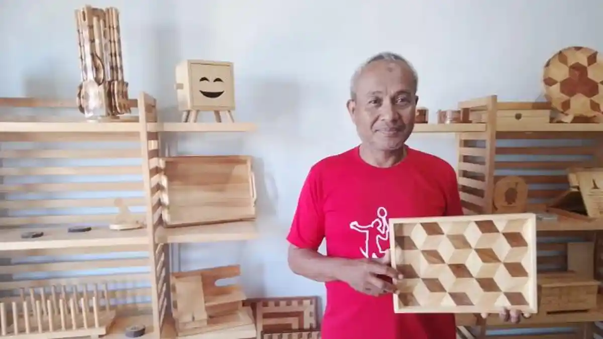

Suara pahat yang beradu dengan kayu terdengar dari balik pintu rumah-rumah pengrajin di pinggiran Karanganyar setiap pagi. Seorang pengrajin tua duduk membungkuk menghadapi balok kayu yang masih kasar, tangannya bergerak pelan namun pasti. Ia tidak terburu-buru. Ia sudah tahu sejak lama bahwa setiap kayu punya waktunya sendiri untuk menjadi sesuatu yang indah.
Kayu yang Diberi Jiwa
Kerajinan kayu di Karanganyar berkembang dari kebutuhan masyarakat akan perabot dan ornamen rumah tangga yang dekat dengan bahan alam sekitar. Seiring waktu, keterampilan ini berkembang menjadi seni ukir yang menggabungkan fungsi praktis dengan nilai estetika dan filosofi Jawa — di mana setiap motif flora dan fauna yang diukir memiliki makna tersendiri bagi pemilikinya.
"Setiap kayu itu beda seratnya, beda karakternya. Kerjaan ini bukan soal cepat-cepatan, tapi soal mendengarkan kayunya dulu sebelum mulai mengukir."
Fakta Menarik
- Kayu yang digunakan pengrajin biasanya berasal dari pohon lokal yang dipanen secara berkelanjutan di lereng Lawu
- Motif ukiran sering terinspirasi dari flora pegunungan Lawu — daun, bunga, dan sulur-sulur khas dataran tinggi
- Sebagian pengrajin masih menggunakan alat pahat tradisional yang diwariskan langsung dari orang tua mereka
- Beberapa sentra kerajinan kini membuka workshop bagi pelajar dan wisatawan yang ingin belajar mengukir

Mengapa Penting?
Kerajinan kayu adalah latihan kesabaran yang tidak bisa diakselarasi oleh mesin. Setiap ukiran yang dihasilkan secara manual menyimpan jejak manusia — ketidakrataan yang justru menjadi keunikannya, dan nilai filosofis yang tidak bisa diterjemahkan ke dalam produksi massal.